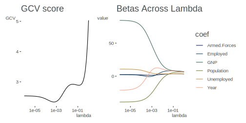
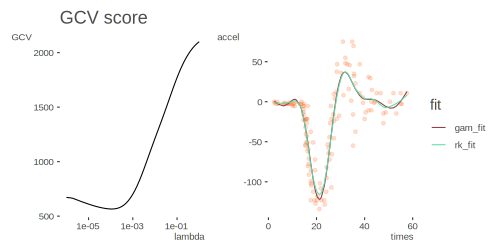

Reproducing Kernel Hilbert Space Regression
This R code is based on Reproducing Kernel Hilbert Spaces for Penalized Regression: A tutorial, Nosedal-Sanchez et al. (2010), specifically, their code in the supplemental section. The original code had several issues as far as general R programming practices, and eventually appears to have been replaced in publication at some point, as did most of the corresponding supplemental text. I can no longer locate the original, so now follow the published code. The original data I was following was also replaced by the longley and mcycle data sets.
To start, we will use an example for ridge regression, followed by a spline example.
Data Setup
library(tidyverse)
data(longley) # avaiable in base R
y = longley[,1]
X = as.matrix(longley[,2:7])
X = apply(X, 2, scales::rescale, to = c(0, 1))Functions
Function to find the inverse of a matrix
We can use base::solve, but this function avoids a computationally singular result.
inverse <- function(X, eps = 1e-12) {
eig.X = eigen(X, symmetric = TRUE)
P = eig.X[[2]]
lambda = eig.X[[1]]
ind = lambda > eps
lambda[ind] = 1/lambda[ind]
lambda[!ind] = 0
P %*% diag(lambda) %*% t(P)
}Reproducing Kernel
rk <- function(s, t) {
init_len = length(s)
rk = 0
for (i in 1:init_len)
rk = s[i]*t[i] + rk
rk
} Gram matrix
For the first example involving ridge regression, the gram function just produces tcrossprod(X). I generalize it in case a different kernel is desired, and add that as an additional argument. This will avoid having to redo the function later.
gram <- function(X, rkfunc = rk) {
apply(X, 1, function(Row)
apply(X, 1, function(tRow) rkfunc(Row, tRow))
)
}Ridge regression
ridge <- function(X, y, lambda) {
Gramm = gram(X) # Gramm matrix (nxn)
n = length(y)
Q = cbind(1, Gramm) # design matrix
S = rbind(0, cbind(0, Gramm))
M = crossprod(Q) + lambda*S
M_inv = inverse(M) # inverse of M
gamma_hat = crossprod(M_inv, crossprod(Q, y))
f_hat = Q %*% gamma_hat
A = Q %*% M_inv %*% t(Q)
tr_A = sum(diag(A)) # trace of hat matrix
rss = crossprod(y - f_hat) # residual sum of squares
gcv = n*rss / (n - tr_A)^2 # obtain GCV score
list(
f_hat = f_hat,
gamma_hat = gamma_hat,
beta_hat = c(gamma_hat[1], crossprod(gamma_hat[-1], X)),
gcv = gcv
)
}Estimation
A simple direct search for the GCV optimal smoothing parameter can be made as follows:
lambda = 10^seq(-6, 0, by = .1)
gcv_search = map(lambda, function(lam) ridge(X, y, lam))
V = map_dbl(gcv_search, function(x) x$gcv)
ridge_coefs = map_df(gcv_search, function(x)
data.frame(
value = x$beta_hat[-1],
coef = colnames(X)
), .id = 'iter') %>%
mutate(
lambda = lambda[as.integer(iter)]
)Compare with Figure 3 in the article.
gcv_plot = qplot(
lambda,
V,
geom = 'line',
main = 'GCV score',
ylab = 'GCV'
) +
scale_x_log10()
beta_plot = ridge_coefs %>%
ggplot(aes(x = lambda, y = value, color = coef)) +
geom_line() +
scale_x_log10() +
scico::scale_color_scico_d(end = .8) +
labs(title = 'Betas Across Lambda')
library(patchwork)
gcv_plot + beta_plot
Pick the best model and obtain the estimates.
ridge_model = ridge(X, y, lambda[which.min(V)]) # fit optimal model
gamma_hat = ridge_model$gamma_hat
beta_0 = ridge_model$gamma_hat[1] # intercept
beta_hat = crossprod(gamma_hat[-1,], X) # slope and noise term coefficientsComparison
I add a comparison to glmnet, where setting alpha = 0 is equivalent to ridge regression.
c(beta_0, beta_hat)[1] 82.7840043 54.1683427 5.3640251 1.3781910 -28.7948627 5.3956341 -0.6095799ridge_glmnet = glmnet::glmnet(
X,
y,
alpha = 0,
lambda = lambda,
standardize = FALSE
)
cbind(
est = c(beta_0, beta_hat),
glmnet = coef(ridge_glmnet)[, which.max(ridge_glmnet$dev.ratio)]
) est glmnet
(Intercept) 82.7840043 82.328741
GNP 54.1683427 69.783267
Unemployed 5.3640251 6.962672
Armed.Forces 1.3781910 1.245064
Population -28.7948627 -37.323055
Year 5.3956341 -1.497405
Employed -0.6095799 -1.605646Example: Cubic Spline
Data Setup
For this example we’ll use the MASS::mcycle data.
x = as.matrix(MASS::mcycle$times)
x = scales::rescale(x, to = c(0, 1)) # rescale predictor to [0,1]
y = MASS::mcycle$accelFunctions
Reproducing Kernel
rk_spline <- function(s, t) {
return(.5 * min(s, t)^2 * max(s, t) - (1/6) * min(s, t)^3)
}No need to redo the gram function do to previous change that accepts the kernel as an argument
Smoothing Spline
smoothing_spline <- function(X, y, lambda) {
Gramm = gram(X, rkfunc = rk_spline) # Gramm matrix (nxn)
n = length(y)
J = cbind(1, X) # matrix with a basis for the null space of the penalty
Q = cbind(J, Gramm) # design matrix
m = ncol(J) # dimension of the null space of the penalty
S = matrix(0, n + m, n + m) # initialize S
S[(m + 1):(n + m), (m + 1):(n + m)] = Gramm # non-zero part of S
M = crossprod(Q) + lambda*S
M_inv = inverse(M) # inverse of M
gamma_hat = crossprod(M_inv, crossprod(Q, y))
f_hat = Q %*% gamma_hat
A = Q %*% M_inv %*% t(Q)
tr_A = sum(diag(A)) # trace of hat matrix
rss = crossprod(y - f_hat) # residual sum of squares
gcv = n * rss/(n - tr_A)^2 # obtain GCV score
list(
f_hat = f_hat,
gamma_hat = gamma_hat,
gcv = gcv
)
}Estimation
lambda = 10^seq(-6, 0, by = .1)
gcv_search = map(lambda, function(lam) smoothing_spline(x, y, lam))
V = map_dbl(gcv_search, function(x) x$gcv)Plot of GCV.
gcv_plot = qplot(
lambda,
V,
geom = 'line',
main = 'GCV score',
ylab = 'GCV'
) +
scale_x_log10()
# gcv_plotComparison
I’ve added comparison to an additive model using mgcv. Compare the result to Figure 2 of the Supplementary Material.
spline_model = smoothing_spline(x, y, lambda[which.min(V)]) # fit optimal model
gam_model = mgcv::gam(y ~ s(x))
fit_plot = MASS::mcycle %>%
mutate(rk_fit = spline_model$f_hat[, 1],
gam_fit = fitted(gam_model)) %>%
arrange(times) %>%
pivot_longer(-c(times, accel), names_to = 'fit', values_to = 'value') %>%
ggplot(aes(times, accel)) +
geom_point(color = '#FF55001A') +
geom_line(aes(y = value, color = fit)) +
scico::scale_color_scico_d(palette = 'hawaii', begin = .2, end = .8)
library(patchwork)
gcv_plot + fit_plot
Source
Original code available at: https://github.com/m-clark/Miscellaneous-R-Code/tree/master/ModelFitting/RKHSReg
Current Supplemental Code
You can peruse the supplemental section that shows the R code here.
Original Supplemental Code
This was the old original code from the supplemental section for the article, but was changed at some point (I can’t remember, it may have been at one of the author’s website). The R code on the repo follows these examples, while this document follows the currently accessible supplementary material. I used RStudio’s default cleanup to make the code a little easier to read, and maybe added a little spacing, but otherwise it is identical to what’s in the linked paper.
A.1
###### Data ########
set.seed(3)
n <- 20
x1 <- runif(n)
x2 <- runif(n)
X <- matrix(c(x1, x2), ncol = 2) # design matrix
y <- 2 + 3 * x1 + rnorm(n, sd = 0.25)
##### function to find the inverse of a matrix ####
my.inv <- function(X, eps = 1e-12) {
eig.X <- eigen(X, symmetric = T)
P <- eig.X[[2]]
lambda <- eig.X[[1]]
ind <- lambda > eps
lambda[ind] <- 1 / lambda[ind]
lambda[!ind] <- 0
ans <- P %*% diag(lambda, nrow = length(lambda)) %*% t(P)
return(ans)
}
###### Reproducing Kernel #########
rk <- function(s, t) {
p <- length(s)
rk <- 0
for (i in 1:p) {
rk <- s[i] * t[i] + rk
}
return((rk))
}
##### Gram matrix #######
get.gramm <- function(X) {
n <- dim(X)[1]
Gramm <-
matrix(0, n, n) #initializes Gramm array #i=index for rows
#j=index for columns Gramm<-as.matrix(Gramm) # Gramm matrix
for (i in 1:n) {
for (j in 1:n) {
Gramm[i, j] <- rk(X[i,], X[j,])
}
}
return(Gramm)
}
ridge.regression <- function(X, y, lambda) {
Gramm <- get.gramm(X) #Gramm matrix (nxn)
n <- dim(X)[1] # n=length of y
J <- matrix(1, n, 1) # vector of ones dim
Q <- cbind(J, Gramm) # design matrix
m <- 1 # dimension of the null space of the penalty
S <- matrix(0, n + m, n + m) #initialize S
S[(m + 1):(n + m), (m + 1):(n + m)] <- Gramm #non-zero part of S
M <- (t(Q) %*% Q + lambda * S)
M.inv <- my.inv(M) # inverse of M
gamma.hat <- crossprod(M.inv, crossprod(Q, y))
f.hat <- Q %*% gamma.hat
A <- Q %*% M.inv %*% t(Q)
tr.A <- sum(diag(A)) #trace of hat matrix
rss <- t(y - f.hat) %*% (y - f.hat) #residual sum of squares
gcv <- n * rss / (n - tr.A) ^ 2 #obtain GCV score
return(list(
f.hat = f.hat,
gamma.hat = gamma.hat,
gcv = gcv
))
}
# Plot of GCV
lambda <- 1e-8
V <- rep(0, 40)
for (i in 1:40) {
V[i] <- ridge.regression(X, y, lambda)$gcv #obtain GCV score
lambda <- lambda * 1.5 #increase lambda
}
index <- (1:40)
plot(
1.5 ^ (index - 1) * 1e-8,
V,
type = "l",
main = "GCV
score",
lwd = 2,
xlab = "lambda",
ylab = "GCV"
) # plot score
i <- (1:60)[V == min(V)] # extract index of min(V)
opt.mod <- ridge.regression(X, y, 1.5 ^ (i - 1) * 1e-8) #fit optimal model
### finding beta.0, beta.1 and beta.2 ##########
gamma.hat <- opt.mod$gamma.hat
beta.hat.0 <- opt.mod$gamma.hat[1]#intercept
beta.hat <- gamma.hat[2:21,] %*% X #slope and noise term coefficients
#### Fitted Line Plot for Cubic Smoothing Spline ####
plot(x[,1],y,xlab="x",ylab="response",main="Cubic Smoothing Spline") ;
lines(x[,1],opt.mod$f.hat,type="l",lty=1,lwd=2,col="blue") ;A.2
A.2 RKHS solution applied to Cubic Smoothing Spline
We consider a sample of size n = 50, (\(y_1, y_2, y_3, ..., y_{50}\)), from the model \(y_i = sin(2πx_i) + ϵ_i\) where ϵi has a N(0, 0.22) . The following code generates x and y…
A simple direct search for the GCV optimal smoothing parameter can be made as follows: Now we have to find an optimal lambda using GCV…
Below we give a function to find the cubic smoothing spline using the RKHS framework we discussed in Section 4.3. We also provide a graph with our estimation along with the true function and data.
###### Data ########
set.seed(3)
n <- 50
x <- matrix(runif(n), nrow, ncol = 1)
x.star <- matrix(sort(x), nrow, ncol = 1) # sorted x, used by plot
y <- sin(2 * pi * x.star) + rnorm(n, sd = 0.2)
#### Reproducing Kernel for <f,g>=int_0^1 f’’(x)g’’(x)dx #####
rk.1 <- function(s, t) {
return((1 / 2) * min(s, t) ^ 2) * (max(s, t) + (1 / 6) * (min(s, t)) ^ 3)
}
get.gramm.1 <- function(X) {
n <- dim(X)[1]
Gramm <- matrix(0, n, n) #initializes Gramm array
#i=index for rows
#j=index for columns
Gramm <- as.matrix(Gramm) # Gramm matrix
for (i in 1:n) {
for (j in 1:n) {
Gramm[i, j] <- rk.1(X[i, ], X[j, ])
}
}
return(Gramm)
}
smoothing.spline <- function(X, y, lambda) {
Gramm <- get.gramm.1(X) #Gramm matrix (nxn)
n <- dim(X)[1] # n=length of y
J <- matrix(1, n, 1) # vector of ones dim
T <- cbind(J, X) # matrix with a basis for the null space of the penalty
Q <- cbind(T, Gramm) # design matrix
m <- dim(T)[2] # dimension of the null space of the penalty
S <- matrix(0, n + m, n + m) #initialize S
S[(m + 1):(n + m), (m + 1):(n + m)] <- Gramm #non-zero part of S
M <- (t(Q) %*% Q + lambda * S)
M.inv <- my.inv(M) # inverse of M
gamma.hat <- crossprod(M.inv, crossprod(Q, y))
f.hat <- Q %*% gamma.hat
A <- Q %*% M.inv %*% t(Q)
tr.A <- sum(diag(A)) #trace of hat matrix
rss <- t(y - f.hat) %*% (y - f.hat) #residual sum of squares
gcv <- n * rss / (n - tr.A) ^ 2 #obtain GCV score
return(list(
f.hat = f.hat,
gamma.hat = gamma.hat,
gcv = gcv
))
}
### Now we have to find an optimal lambda using GCV...
### Plot of GCV
lambda <- 1e-8 V <- rep(0, 60) for (i in 1:60) {
V[i] <- smoothing.spline(x.star, y, lambda)$gcv #obtain GCV score
lambda <- lambda * 1.5 #increase lambda
}
plot(1:60,
V,
type = "l",
main = "GCV score",
xlab = "i") # plot score
i <- (1:60)[V == min(V)] # extract index of min(V)
spline_model <- smoothing.spline(x.star, y, 1.5 ^ (i - 1) * 1e-8) #fit optimal
model
#Graph (Cubic Spline)
plot(
x.star,
spline_model$f.hat,
type = "l",
lty = 2,
lwd = 2,
col = "blue",
xlab = "x",
ylim = c(-2.5, 1.5),
xlim = c(-0.1, 1.1),
ylab = "response",
main = "Cubic Spline"
)
#predictions
lines(x.star, sin(2 * pi * x.star), lty = 1, lwd = 2) #true
legend(
-0.1,
-1.5,
c("predictions", "true"),
lty = c(2, 1),
bty = "n",
lwd = c(2, 2),
col = c("blue", "black")
)
points(x.star, y)